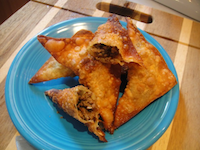

Somalia is a country located in the Horn of Africa. It is bordered by Ethiopia to the west, Djibouti to the northwest, the Gulf of Aden to the north, the Indian Ocean to the east, and Kenya to the southwest. Somalia has the longest coastline on the continent, and its terrain consists mainly of plateaus, plains and highlands/ Hot conditions prevail year-round, along with periodic monsoon winds and irregular rainfall.
The cuisine of Somalia varies from region to region and consists of an exotic mixture of diverse culinary influences. It is the product of Somalia's rich tradition of trade and commerce. Despite the variety, there remains one thing that unites the various regional cuisines: all food is served halal. There are therefore no pork dishes, alcohol is not served, nothing that died on its own is eaten, and no blood is incorporated. Qaddo or lunch is often elaborate.
Sambusa,(ahh sambusa...) is a triangular snack that is commonly eaten throughout Somalia during the afur (iftar). The Somali version is spiced with hot chili pepper, and the main ingredient is often ground meat. Kabaab is a snack eaten by southern Somalis or kebab sticks with vegetables or kofta kebab . chips but homemade chips are made with fresh potato and some black pepper. Fruits such as mango (cambo), guava (Seytuun), banana (moos) and grapefruit (liinbanbeelmo) are eaten throughout the day as snacks.